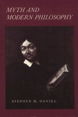

Reveals how certain early modern thinkers incorporate figurative dimensions into their accounts of reasoning
Reveals how certain early modern thinkers incorporate figurative dimensions into their accounts of reasoning


 Reveals how certain early modern thinkers incorporate figurative dimensions into their accounts of reasoning
Reveals how certain early modern thinkers incorporate figurative dimensions into their accounts of reasoning

|  |
Myth and Modern PhilosophyStephen H. Danielcloth EAN: 978-0-87722-644-4 (ISBN: 0-87722-644-X) |
"Daniel argues with force and, for the most part, with exemplary clarity.... The case made for interpreting both high modernists such as Bacon and Descartes as mythical thinkers or fabulists is striking and surprisingly persuasive.... Daniel offers a genuinely novel approach to the question of what is to be included in the canon of Western thought."
—Edith Wyschogrod, Queens College, CUNY
This book presents the first concerted effort to apply current research in philosophic historiography and literary theory to the study of mythic features in classical modern philosophy. Highlighting contemporary descriptions of myth and metaphor such as those proposed by Foucault, Ricoeur, and Derrida, it reveals how certain early modern thinkers incorporate mythopoetic and figurative dimensions into their accounts of reasoning experience.
Stephen Daniel finds possibilities for a new role for myth and metaphor in the philosophies of Bacon, Descartes, Berkeley, Mandeville, Vico, Diderot, Condillac, Herder, Hamann, and others. He implicitly challenges the dominant contemporary view of philosophy, particularly in the period being considered, as dedicated to the search for demonstrable truth and, in that sense, the antithesis of myth. Disagreeing with the interpretation that myth and fable serve as rhetorical embellishments of philosophy, he argues for their intrinsic importance to the problematics of philosophical thought. By comparing poststructuralist, deconstructive, hermeneutic, and semiotic strategies, Daniel shows how a romanticist approach to the history of philosophy portrays central figures in seventeenth-and eighteenth-century philosophy in a provocative new way.
Stephen H. Daniel is Associate Professor and Assistant Chair of the Philosophy Department at Texas A&M University.
© 2015 Temple University. All Rights Reserved. This page: http://www.temple.edu/tempress/titles/681_reg.html.